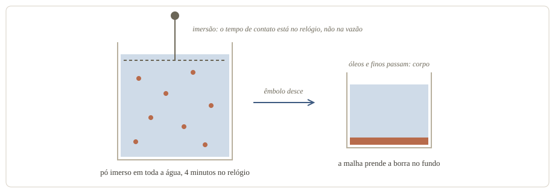

Finalmente entendi o que estava no cardápio
Provei vários métodos de preparo num workshop de cafés especiais. Cheguei meio desconfiado. Para mim, café é uma bebida que gosto, e a cafeteria especial tinha um pouco de teatralidade: balança de precisão, chaleira de bico fino e um copo pequeno demais pelo preço. Saí de lá com outra leitura e com um caderno de anotações.
A descoberta que organiza tudo cabe numa frase: todo método de preparo é um jeito diferente de controlar três variáveis, temperatura, pressão e tempo, aplicadas sobre uma moagem e uma proporção de café e água. O gesto circular, o filtro escaldado, a pausa de meio minuto olhando o pó borbulhar: quase tudo que eu chamava de teatro existe para proteger uma dessas variáveis, ou a condição que deixa as três trabalharem: o contato uniforme entre a água e o pó.
Café azedo é café que parou cedo
Uma xícara de café é água mais o que ela conseguiu dissolver do pó. Esse processo tem nome, extração, e tem ordem. Os compostos mais solúveis saem primeiro: são os ácidos, o lado brilhante e cítrico da bebida. Os açúcares vêm no meio, com a doçura e o equilíbrio. Os compostos amargos e adstringentes, os que deixam a boca seca, saem por último.
São as três fases que anotei no workshop: acidez, doçura e amargor, nessa sequência. A consequência prática é que fazer café é decidir onde parar. Quem para cedo demais leva só a primeira fase, e o café sai azedo, ralo, subextraído. Quem passa do ponto arrasta a terceira, e o café sai amargo e seco, superextraído. O equilíbrio mora no meio, e a janela é mais estreita do que eu imaginava.

O que decide onde você para são três variáveis:
- Temperatura: água mais quente dissolve mais rápido, e a faixa usual de preparo fica entre 92 e 96 °C;
- Tempo: quanto mais contato entre água e pó, mais extração, e os métodos vão de meio minuto a um dia inteiro;
- Pressão: a força que empurra a água através do pó, da gravidade pura dos coadores à bomba das máquinas de espresso.
Antes de tudo isso, duas escolhas definem o ponto de partida. A moagem, que é o tamanho do grão depois de moído. E a proporção entre café e água, que define a força da bebida: uma referência comum nos filtrados é 1 parte de café para 16 de água. Força e amargor são coisas diferentes.
As “frescuras”, uma por uma
A moagem foi onde a ficha caiu, com a imagem mais útil que trouxe do workshop. Jogue um balde de água numa caixa de brita: a água atravessa na hora. Jogue o mesmo balde numa caixa de areia: a água leva minutos para passar. Pó fino é areia, pó grosso é brita. A areia oferece mais superfície de contato, então a água dissolve mais depressa. De quebra, ela segura a água por mais tempo no caminho. A brita faz o oposto: deixa a água escapar, e por isso pede mais tempo de contato. Escolher a moagem é escolher em que velocidade a física vai trabalhar.
Toda essa água atravessa a cama de café, a camada de pó assentada no filtro. A cama só trabalha se a água passar por ela inteira: quando um canal se abre no meio do pó, parte da água escapa por ele sem extrair quase nada.
O pó recém-torrado complica a passagem. A torra cria gás carbônico que fica preso no grão, e ele escapa aos poucos nas primeiras semanas. Gás repele água. Daí a primeira “frescura” que anotei, que o mundo do café chama de ataque: molhar o pó com o dobro do peso dele em água, esperar de 30 a 45 segundos até as bolhas assentarem, e só então completar. A pausa deixa o gás sair antes de a extração de verdade começar.
Os outros gestos têm a mesma natureza:
- Movimento circular: despejar em espiral molha a cama por igual, a serviço do contato uniforme;
- Escaldar o filtro: a água quente no filtro vazio tira o gosto de papel e pré-aquece o coador e a jarra, segurando a temperatura do preparo;
- Bypass: o nome que aprendi para a água que desce pela borda, entre o filtro e a parede, e chega à jarra sem ter atravessado o pó, isto é, contato zero e bebida diluída;
- Oxidação: o café pronto perde os aromas assim que fica parado, o oxigênio degrada os compostos em questão de meia hora, o calor acelera tudo, e garrafa térmica fechada é o melhor abrigo.
E as duas técnicas da abertura também têm dono: a balança de precisão cuida da proporção, e a chaleira de bico fino cuida do ritmo e da direção do despejo.
Falta um conceito, o escoamento: a assinatura de vazão de cada coador, ditada pelo furo, pelas ranhuras e pelo filtro que ele aceita. Com tudo isso, os métodos se agrupam, pela física que os move, e o escoamento é o que separa os coadores da segunda delas.
O café de molho perdoa
A primeira família é a da imersão: o pó fica mergulhado em toda a água do preparo, do início ao fim, e o tempo de contato se mede no relógio. É a família que mais perdoa, porque o escoamento simplesmente não existe aqui.
Prensa francesa
A prensa francesa é a cara dessa família, e a certidão dela atravessa a França e a Itália. O primeiro registro é a patente francesa de 1852, de Henri-Otto Mayer e Jacques-Victor Delforge, um pistão com filtro que ainda não vedava a parede. O desenho moderno veio dos milaneses Attilio Calimani e Giulio Moneta, que patentearam em 1929 o êmbolo com mola vedando o filtro contra o vidro. A popularização veio décadas depois, com marcas como a dinamarquesa Bodum.
O mecanismo cabe em três frases. Moagem grossa no fundo do vidro, água quente por cima, cerca de quatro minutos de espera. O êmbolo de malha metálica desce devagar e prende a borra no fundo. Sem papel no caminho, a malha segura a borra grossa e deixa passar as partículas finas que o papel reteria. Corpo, daqui em diante, é a sensação de espessura da bebida na boca.

- A favor: com o tempo no relógio, é difícil errar, e foi das xícaras mais encorpadas que provei;
- Contra: sedimento no fundo, xícara menos limpa, e pressa para servir, porque o café que fica sobre a borra segue extraindo e amarga.
O cold brew, o café de água fria, entra aqui de carona, porque é a imersão levada ao extremo: moagem grossa de molho por 12 a 24 horas, em temperatura ambiente ou gelada, rendendo um concentrado que se dilui em água ou leite.
A troca é: menos temperatura, muito mais tempo, e a extração acontece do mesmo jeito. Já a fama de café menos ácido é mais tímida do que o marketing sugere: a bebida carrega menos ácido no total, e mesmo assim a acidez que a língua sente fica parecida com a do café quente.
Quem manda no tempo, o coador ou a mão
A segunda família é a da percolação: a água atravessa a cama de café uma vez, de cima para baixo, e leva o que conseguiu dissolver no caminho. É a família dos coadores, que o mercado chama de drippers. A cafeteira elétrica de filtro, o drip coffee de hotel, é a mesma física com um chuveiro automático em cima. Aqui o escoamento manda, e cada coador responde de um jeito à pergunta do título desta seção.
Melitta
Em 1908, a dona de casa alemã Melitta Bentz, depois de tentar sacos de linho e filtros de pano, furou um pote de latão e o forrou com uma folha de mata-borrão do caderno do filho. A patente do filtro de papel saiu em junho daquele ano, a empresa com o nome dela nasceu na sequência, e o cone que conhecemos chegou em 1932. No coador Melitta de hoje, a parede é lisa e a saída são furos pequenos: a vazão é do coador, e a mão pouco muda o resultado.

- A favor: barato, fácil de achar, difícil de errar, e o papel entrega uma xícara limpa, sem sedimento, que a prensa não alcança;
- Contra: o mesmo desenho que protege do erro limita o ajuste fino, porque a vazão tem teto.
V60
O V60 responde à pergunta do jeito oposto. A Hario, vidraria japonesa, lançou o cone em 2005, evoluindo um coador de 1980 que não vingou na era do café solúvel. O nome vem do ângulo de 60 graus. As ranhuras em espiral sobem até a borda e mantêm o papel descolado da parede, deixando o ar escapar, e a saída é um furo único e largo, que não estrangula o fluxo. Quem dita o tempo é o despejo: rápido demais tende ao café ralo, fino e em espiral tende ao café bem extraído.

- A favor: o maior controle, para quem quer decidir a extração despejo a despejo;
- Contra: o controle cobra, porque cada hesitação da mão, cada despejo na borda virando bypass, aparece na xícara.
Origami
O Origami dobra a aposta da versatilidade. As 20 dobras que dão nome ao coador aceitam dois filtros: o cônico, como o do V60, que corre rápido pelos vãos das dobras, e o de fundo chato, que muda o desenho da cama e o ritmo do escoamento. O coador ficou famoso no World Brewers Cup de 2019, o mundial dos métodos de coar. Dois perfis num objeto só, com um contra à altura: mais uma decisão para errar, e porcelana artesanal custa como porcelana artesanal. A versão Air, de resina, esquenta mais rápido que a porcelana, lembrete de que até o material do coador mexe na temperatura.

Koar
O Koar foi criado em Pernambuco em 2017, com 16 sulcos inclinados e uma saída de 16 milímetros, e os sulcos mantêm o papel longe da parede para controlar o fluxo. Segundo a matéria que o apresenta, o desenho mira menos acidez e mais doçura na xícara. O Koar responde como a Melitta, com o coador no comando, só que com intenção declarada. O contra é ser menos difundido: menos receitas circulando e menos gente para pedir ajuda quando a xícara sai errada.

Sem tempo para errar
A terceira família abandona a gravidade e empurra a água. Com pressão, o tempo de contato encolhe até caber em segundos, e a bebida muda de natureza.
Espresso
Vinte e cinco a trinta segundos: é quanto dura a extração de um espresso. A história que leva até esse meio minuto é uma corrida italiana de patentes. Angelo Moriondo, de Turim, patenteou em 16 de maio de 1884 uma máquina a vapor que fazia café em volume, para encher jarras. Luigi Bezzera e Desiderio Pavoni transformaram a ideia na dose individual nas duas décadas seguintes, e a alavanca de pistão de Achille Gaggia, em 1945, levou a pressão à casa dos 8 a 10 bar, oito a dez vezes a pressão atmosférica. Sob essa força, a água atravessa uma pastilha de pó fino e compactado e sai como um concentrado coberto pela crema, a espuma cor de caramelo que a pressão produz.

- A favor: concentração, velocidade, a crema, e a base de quase tudo que leva leite;
- Contra: o equipamento mais complexo do artigo, moagem fina inegociável, e quase nenhuma tolerância a erro, porque em meio minuto não sobra tempo de corrigir nada.
AeroPress
O AeroPress ataca a mesma ideia pelo lado barato e tolerante. Alan Adler, o inventor do aro voador Aerobie, começou a mexer com café na garagem, em Palo Alto, em 2003, irritado com as cafeteiras domésticas. Dois anos e mais de 30 protótipos depois, apresentou o AeroPress em novembro de 2005, numa feira do setor em Seattle. O mecanismo é uma seringa gigante: imersão curta dentro do cilindro, e então o êmbolo empurra tudo através de um filtro de papel, com a pressão da sua mão no lugar da bomba.

- A favor: barato, leve, simples de levar, e com a xícara limpa do papel somada ao corpo da imersão;
- Contra: uma dose por vez, e a receita aberta demais, porque com tantas variáveis soltas cada pessoa faz um café diferente com o mesmo aparelho.
O método que lê o futuro
O café turco é decocção, o pó fervendo junto com a água: moagem a talco, água fria e o açúcar de quem quiser vão juntos para um pote próprio, o cezve, e aquecem lentamente até formar a espuma característica. Serve-se tudo, pó incluído, em xícaras pequenas, com um copo de água ao lado. A espuma densa do topo nasce dessa fervura lenta, bem longe da crema de pressão.
Um preparo lento no pote, o papel das casas de café como ponto de conversa e leitura, e um detalhe que nenhum outro método tem: a borra que sobra no fundo da xícara é usada para ler a sorte. A leitura da borra que anotei no workshop entra aqui, como cultura, e serve de lembrete honesto: café nunca foi só extração.

- A favor: o café mais denso, a espuma, e um ritual que transforma a bebida em ocasião;
- Contra: a borra na boca de quem não esperava, e o amargor fácil, porque a fervura é a variável de temperatura no talo, acelerando a fase final da extração.
Onde a minha régua quebrou
O que o workshop quebrou foi a minha régua de leigo. Eu carregava duas certezas: café amargo era café forte, e café azedo era café gourmet. As duas caíram juntas. Amargor costuma ser a terceira fase da extração chegando na xícara, sinal de parada tardia. Azedo costuma ser a primeira fase sozinha, sinal de parada cedo demais. Força é outra régua, a da proporção entre café e água. Eu passei anos lendo defeito de preparo como personalidade da bebida.
A comparação entre os métodos foi o segundo tombo, e ela termina longe de um ranking: o coador de supermercado e a máquina de espresso respondem à mesma pergunta, onde parar a extração, com orçamentos muito diferentes. A imersão é a que mais perdoa, a percolação expõe a mão na medida em que o coador deixa, a pressão cobra em segundos, e a decocção ignora o debate e serve o pó junto. Nenhuma dessas respostas é frescura. São escolhas de engenharia com mais de um século de patentes atrás de cada uma.
Mexa num botão de cada vez
A lição que trouxe para casa pede método antes de equipamento. Se o seu café de hoje sai azedo, extraia mais: moagem mais fina, água mais quente ou mais tempo de contato. Se sai amargo, extraia menos: moagem mais grossa, água um pouco mais fria ou menos tempo.
Em geral é por aí que se começa, mudando uma variável por vez e provando, porque mexendo em duas você nunca sabe qual delas respondeu.